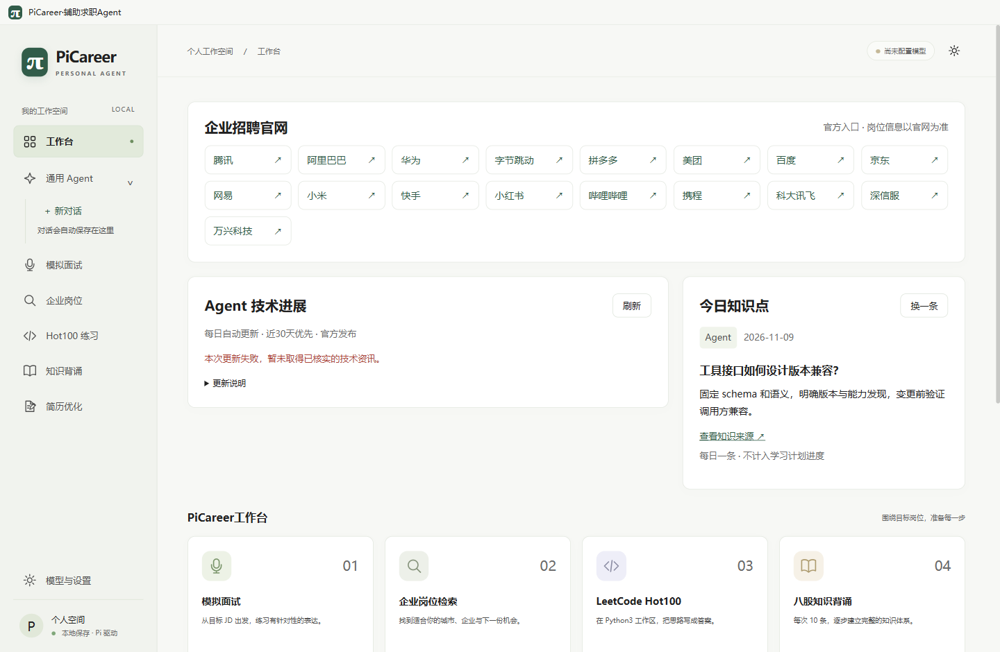
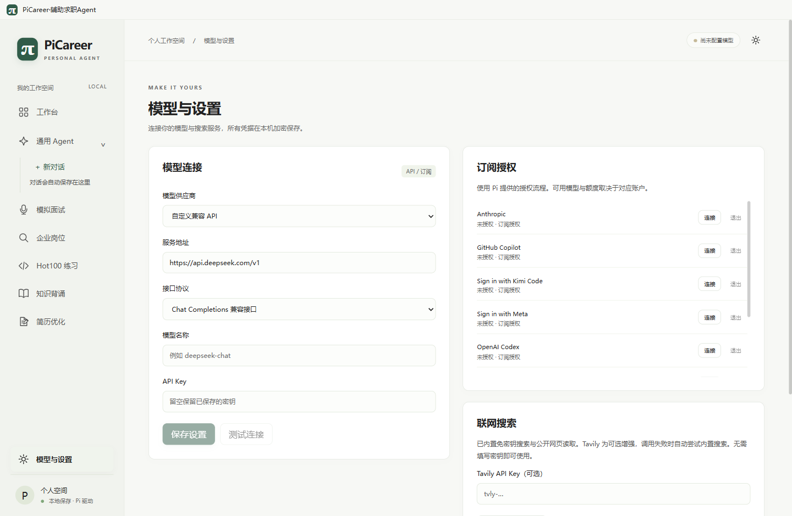
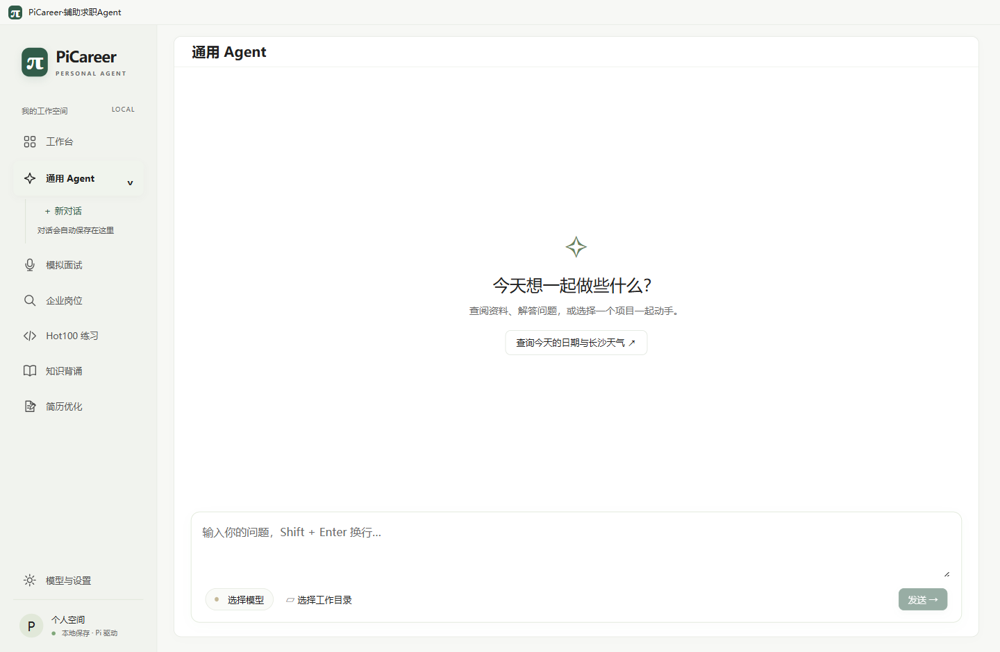
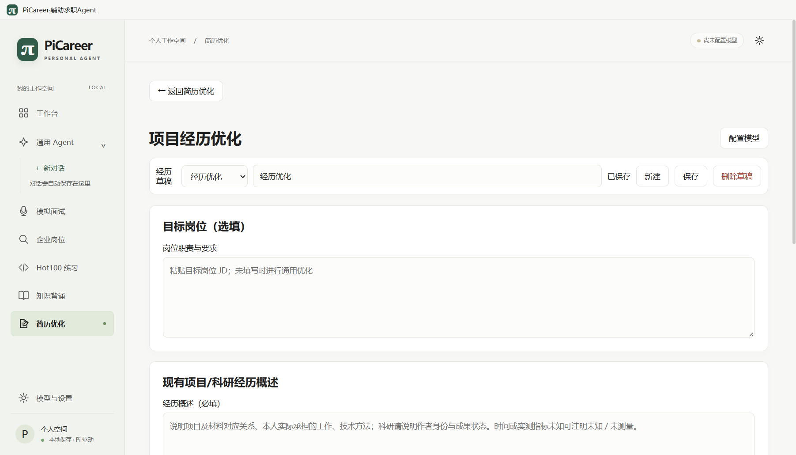
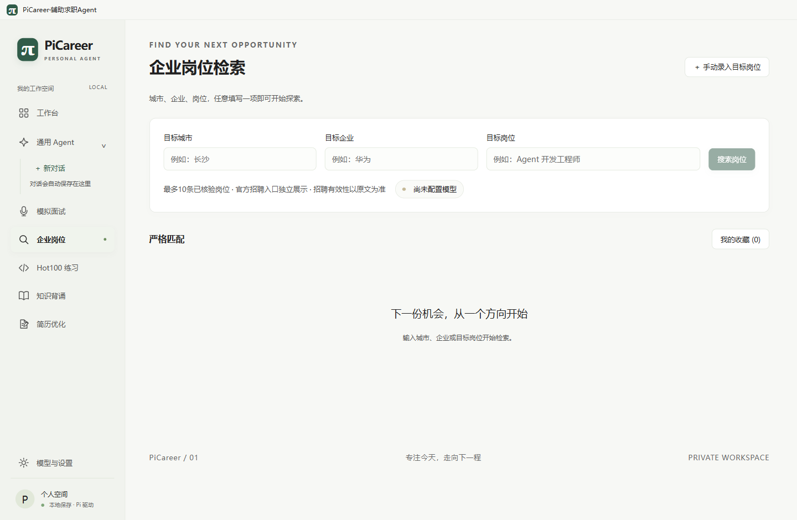
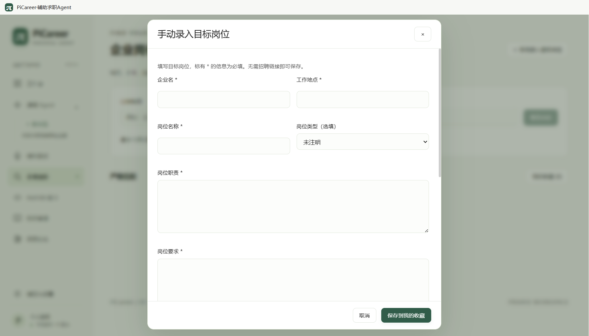
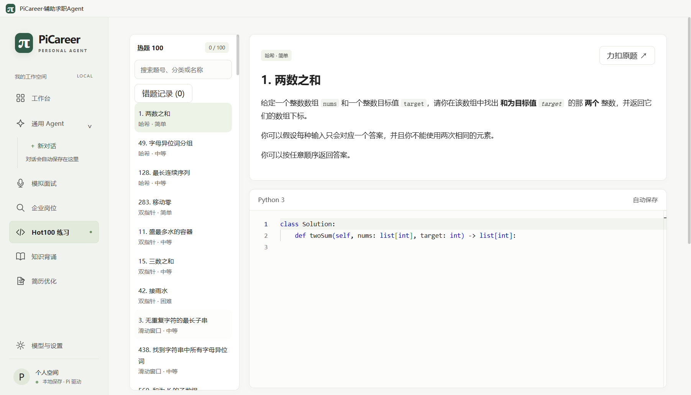
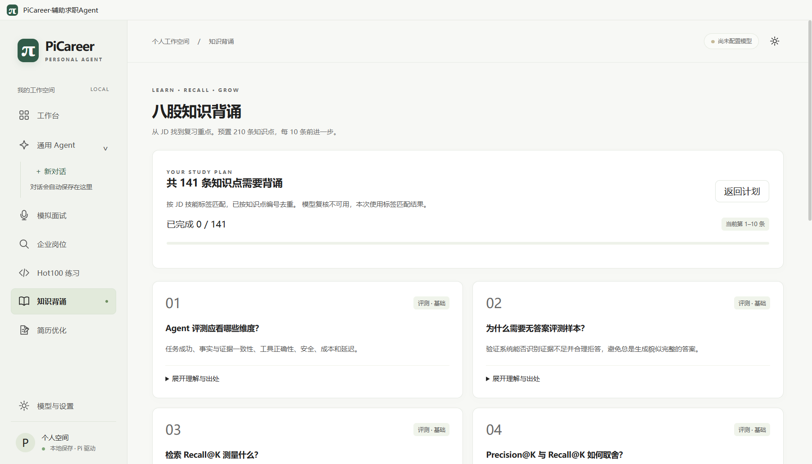

PiCareer 是一个运行在 Windows 桌面上的个人求职工作台，也是一个可以操作本机文件的通用 Agent。它把“找岗位、改简历、练面试、刷算法、背八股、查资料”放进同一个本地应用，并把模型、搜索和文件操作统一到一套可见、可停止、可追溯的交互里。
求职过程通常分散在招聘网站、文档编辑器、题库、聊天窗口和浏览器标签页之间。信息重复填写、材料反复复制、面试准备缺少反馈、刷题记录散落，是常见的摩擦点。PiCareer 的选择不是再做一个招聘网站，而是把个人电脑上的“求职工作区”组织成一个应用：

| 模块 | 主要输入 | 产出 | 关键边界 |
|---|---|---|---|
| 工作台 | 无需输入；读取本地缓存与公开资讯 | 招聘官网入口、每日技术进展、今日知识点、最近对话与学习进度 | 资讯每日最多自动尝试一次；失败保留缓存 |
| 通用 Agent | 自然语言问题；可选工作目录 | 带工具调用的回答、文件操作、命令执行、Skills 调用 | 本机工具需选择目录；写入与命令需审批；不是操作系统沙箱 |
| 简历优化 | 岗位 JD、经历概述、项目／论文／专利材料 | 2～4 条精炼经历、事实引用、可复制文稿、版本记录 | 0.1.15 仅开放项目经历优化；完整简历入口显示开发中 |
| 企业岗位 | 城市、企业、岗位；或手动录入表单 | 严格匹配、相关备选、官网入口、匹配证据、收藏与 JD | 职位有效性以原站为准；不保证每组都有结果 |
| 模拟面试 | 企业、岗位、JD 文本或公开链接 | 8 道主问题、每题最多 2 次追问、面试报告 | 问题是模拟，不冒充企业真题；评分不是录用判断 |
| Hot100 / 知识背诵 | 算法练习代码；目标岗位 JD | 官网提交记录、错题视图；210 条知识库的分批计划与测验 | Hot100 不在本地判题；知识条目带来源与版本 |
| 维度 | 当前事实 |
|---|---|
| 产品版本 | 0.1.15（2026-10-14 发布记录），本文所有界面与行为以该版本为准 |
| 操作系统 | Windows 10/11 x64；发行包自带 Electron 与 Pi SDK，不要求用户安装 Node 或 Python |
| 使用模式 | 单用户、本地存储、单实例；同一时间只允许一个 PiCareer 进程持有窗口 |
| 网络 | 界面本身禁止远端加载；联网只发生在后台服务与主进程的独立网络会话中，遵循 Windows 系统代理 |
| 数据位置 | %APPDATA%\PiCareer；包含 SQLite、Pi 会话、简历材料缓存、Agent 工作区与模型缓存 |
| 凭据 | API Key 与 OAuth 令牌经 Windows safeStorage 加密后写入 SQLite；前端只拿到“是否存在” |
| 签名 | 发行包尚未购买代码签名证书，属于未签名的个人测试发行版 |
PiCareer.exe，不要在压缩包内直接运行。PiCareer 的安装包已经包含 Electron 运行时与本地 Pi SDK，不需要用户另外安装 Node、Python 或数据库。真正需要在首次启动时完成的，是模型与搜索的配置，以及对本地数据位置的了解。
| 方式 | 操作 | 适合场景 | 注意 |
|---|---|---|---|
| 安装版 | 运行 PiCareer-0.1.15-x64.exe，按向导安装；安装器会创建桌面快捷方式 | 长期使用；希望升级与卸载由安装器管理 | 未签名，Windows 可能显示 SmartScreen 提示 |
| 便携版 | 解压 PiCareer-0.1.15-x64.zip 到普通文件夹，双击 PiCareer.exe | 不想安装；在多台机器间携带 | 不要在 ZIP 内直接双击；解压后再运行 |
| 源码启动 | 在源码目录双击 启动 PiCareer.cmd，它打开 release/win-unpacked/PiCareer.exe | 开发与验收 | 需要同级 pi-main 与已准备的工作区 |
主进程先做单实例检查，确定 %APPDATA%\PiCareer，在数据库存在时复制一份 .backup，再启动 utilityProcess 加载 Pi 运行时与业务服务，最后打开本地界面。如果配置了模型，后台会初始化 ModelRuntime；如果当天尚未尝试更新资讯，工作台会启动一次受限的公开网页检索。资讯失败不会阻止启动，也不会伪造新闻。
| 路径 | 内容 | 备份注意 |
|---|---|---|
picareer.sqlite | 设置、聊天、岗位收藏、面试、学习计划、刷题记录、简历草稿与仪表盘缓存 | 关闭应用后复制 |
picareer.sqlite.backup | 启动时自动生成的上一份数据库副本 | 可恢复数据库，但不是完整备份 |
sessions/ | Pi 会话的 JSONL 记录，支持继续旧对话 | 与数据库一起复制 |
resume-materials/<草稿ID>/ | 导入后的材料副本与图片副本 | 与数据库一起复制；原文件不动 |
agent/ | Pi 配置、Skills 与本地 rg.exe | 可复制；Skills 可单独保留 |
model-cache.json | 模型目录缓存 | 可删除后重建 |
0.1.2 至 0.1.15 的覆盖安装记录都强调同一件事：安装前后用户数据库的 SHA-256 保持一致。安装器不会主动改写业务数据；升级后的首次启动会重新打开同一个数据库，并在需要时生成新的 .backup。
%APPDATA%\PiCareer 到备份位置。仅复制 EXE 不构成数据备份。user_version 高于当前应用支持的版本，应用会拒绝打开。不要用旧版本强行读取新数据库；应恢复匹配版本的备份。| 现象 | 优先检查 | 处理方向 |
|---|---|---|
| 双击后进程立即退出，无窗口 | 是否在设置了 ELECTRON_RUN_AS_NODE=1 的终端／IDE 中启动 | 清除该环境变量，改用桌面快捷方式；详见案例 C12 |
| 提示“后台进程已退出（1）” | 数据目录是否被更高版本写过；数据库是否损坏；磁盘是否可写 | 恢复 .backup 或匹配版本；详见案例 C13 |
| 窗口打开但一直显示“加载本地记录与 Pi 运行时…” | 后台是否崩溃、杀毒软件是否拦截、数据目录权限 | 查看是否有错误提示；重启应用；保留数据目录 |
| 已有窗口，但双击又启动一个 | 单实例机制会唤醒原窗口 | 这是预期行为；检查窗口是否被最小化 |
PiCareer 的所有生成能力都依赖一个已配置的模型；搜索能力则分为“可选 Tavily”和“免密钥公开搜索”两条路径。两者都不是安装即用，需要用户明确选择并确认。
填写服务地址、准确的模型 ID、接口协议和 API Key。支持 OpenAI Chat Completions、OpenAI Responses、Anthropic Messages 三类兼容接口。默认地址只是占位，不附带账户或额度。
使用 Pi 提供的 OAuth 流程连接 Anthropic、GitHub Copilot、OpenAI Codex 等供应商。可用模型与额度取决于对应账户；授权成功不等于模型调用一定成功。
| 字段 | 填写要求 | 常见错误 |
|---|---|---|
| 服务地址 | 必须是 http(s) 地址；通常以 /v1 结尾，但以供应商文档为准 | 把网页控制台地址当 API 地址；末尾多了 /chat/completions |
| 接口协议 | Chat Completions、Responses 或 Anthropic Messages，必须与服务端真实协议一致 | 协议选错导致 404、400 或返回结构解析失败 |
| 模型名称 | 供应商实际接受的模型 ID，不是展示名 | 大小写、版本后缀或路由别名不匹配 |
| API Key | 只写入本机加密存储；留空表示保留已保存的 Key | 把 Key 填进聊天内容；在公开截图中暴露 Key |
保存后应用会重新注册自定义 provider。默认按 64k 上下文、8k 最大输出描述该模型；这只是兼容默认值，不代表服务真实容量。因此自定义模型的 Context 百分比通常显示“暂不可用”，而不是编造一个数字。
OpenAI Codex 还可以切换设备码登录；如果浏览器回调无法回到本机，可展开备用区域粘贴本次完整回调地址。本地回调端口默认是 1455；端口被占用时应用会给出中文提示，不会去操作占用端口的其他程序。
不填写 Tavily Key 也可以使用搜索：应用会依次尝试 Bing 与 DuckDuckGo 的公开 HTML 页面，并用 Mozilla Readability 提取正文。Tavily 是可选增强：配置后优先调用；失败时仍会回退到公开搜索，并在来源中保留实际引擎与备用原因。
| 能力 | 是否需要 Key | 说明 |
|---|---|---|
| Tavily 搜索／正文 | 可选 | 配置后优先；额度、密钥或网络失败会回退 |
| Bing／DuckDuckGo 公开搜索 | 否 | 受网站验证、限流和页面结构影响；不绕过验证 |
| 公开网页正文读取 | 否 | 只读 HTML／纯文本；不执行脚本、不登录第三方网站 |
| 天气与日期 | 否 | 天气来自 Open-Meteo，当前天气是模型数据，不是本机观测 |

工作台不是装饰性的首页，而是每天打开应用后的信息入口：招聘官网、Agent 技术进展、今日知识点，以及最近对话和学习进度。它的设计原则是“缓存优先、来源可查、失败可见”。
0.1.15 的工作台提供 17 个企业招聘官网入口，包括腾讯、阿里巴巴、华为、字节跳动、拼多多、美团、百度、京东、网易、小米、快手、小红书、哔哩哔哩、携程、科大讯飞、深信服与万兴科技。点击后使用系统默认浏览器打开。
这些入口只表示“官网入口”，不代表某个岗位仍在招聘，也不代表应用已经完成该企业的岗位检索。官网入口与岗位结果在界面上分开显示，避免用入口数量冒充岗位数量。
资讯来源限定为 OpenAI、Anthropic、LangChain 官方发布与确认的框架官方仓库，不使用普通搜索摘要直接包装成新闻。每条保存发布日期、日期依据、正文摘录、来源网址和检索时间。
今日知识点来自预置的 LLM、RAG、Agent、框架、评测与部署知识库。同一天重启保持所选条目，「换一条」立即切换，次日更换。它不计入「知识背诵」的计划完成数。五张功能卡按“模拟面试、企业岗位检索、LeetCode Hot100、八股知识背诵、简历优化”排列，编号 01～05，与侧栏顺序一致。
通用 Agent 是 PiCareer 里最接近“操作系统助手”的部分：它既能只聊天，也能在用户选择工作目录后读写文件、查找内容、执行 PowerShell，并调用日期、天气、搜索与网页读取工具。

| 模式 | 可用能力 | 适用场景 |
|---|---|---|
| 未选择目录 | 日期、天气、网页搜索、公开网页正文；不能读写本机文件或执行命令 | 查资料、问概念、做轻量分析 |
| 已选择目录 | 在上述能力上增加 read、ls、find、grep、write、edit、powershell | 阅读项目、修改文件、运行脚本、整理工作区 |
选择目录后，Pi 可以读取该目录下的文件，但路径被限制在所选目录内；应用级 Skills 目录仅开放读取。未选择目录的会话使用独立 workspace，不会把用户数据目录当作可读项目。
| 工具 | 作用 | 是否需要审批 |
|---|---|---|
read / ls / find / grep | 读取文件、列目录、按 glob 查找、按内容搜索 | 读取类通常不需要；仍受目录边界限制 |
write / edit | 新建或修改文件 | 需要；写入前展示原内容与拟写入内容 |
powershell | 以当前 Windows 用户权限执行命令 | 需要；可仅允许一次，或本次打开 App 期间允许该目录 |
web_search / web_fetch | 公开搜索与正文读取 | 不需要逐次审批；受公开网址与网络边界限制 |
| Skills 脚本 | 按 SKILL.md 描述执行工作方法 | 脚本仍走命令审批，不会跳过 |
回答以流式方式出现，可随时停止。运行时工具进度最多显示三行浅色动态文字，结束后收成一行状态；停止、失败、中断使用不同文案。每一轮结束显示 Context 估算余量，它来自 Pi SDK 的 getContextUsage()，不是账户额度；自定义模型容量未确认时显示“暂不可用”。
选择目录后，应用会加载项目根目录的 AGENTS.md / CLAUDE.md（AGENTS.override.md 优先），以及 .pi/skills、.agents/skills 和 %APPDATA%/PiCareer/agent/skills。在相应目录放置包含 SKILL.md 的技能文件夹后，下一轮对话自动发现；输入 /skill:名称 可显式调用。
删除入口会先停止该对话的任务，再展示清理清单。确认后删除聊天与 Pi 会话记录，并把能够确认由本对话新建的文件移入 Windows 回收站；原有项目文件、外部修改或其他对话引用的文件会跳过。未声明的命令产物不会仅凭历史文本自动认领。
write 新建的文件会自动登记；edit 更新已登记文件的指纹。outputPaths 声明预期产物；只有执行前不存在、执行后核验通过的普通文件才会登记。简历模块的目标不是“让 AI 编一段漂亮的经历”，而是把用户真实做过的项目、论文或专利，压缩成 2～4 条有依据、可核对、可复制的描述。0.1.15 只开放「项目经历优化」；「完整简历」入口保留，但显示开发中提示。

| 项目 | 限制 |
|---|---|
| 单个普通文件 | 不超过 30 MB；支持 PDF、DOCX、TXT、Markdown、PNG、JPG |
| 源码目录 / ZIP | 声明解压容量不超过 100 MB，物理条目不超过 100,000；可读源码最多 10,000 份 |
| 单个源码文件 | 超过 512 KB 不读取；只读取支持的文本扩展名 |
| PDF 页数 | 最多读取 60 页，其中最多 6 个扫描页；扫描页需要支持图片输入的模型 |
| 单次材料数 | 最多选择 8 份材料，可以继续追加 |
| 单批发送 | 不超过 9 万字符、6 张图片；每次模型调用最多 3 分钟，整次任务按批次数扩展时限 |
| 成稿结构 | 每项经历 2～4 条精炼描述；未知时间、未测量指标、无依据的成果状态应省略 |
PDF 由 PDF.js 在本地提取文本，并按页码标注来源；DOCX 由 Mammoth 读取文本，不读取嵌入图片或复刻排版；ZIP 由 yauzl 按条目读取，拒绝路径逃逸、符号链接、加密 ZIP 与超限容量；图片经 @napi-rs/canvas 缩放后作为图片输入。目录扫描会先排除依赖、构建、版本库、缓存、发布归档与凭据文件。材料解析在独立 worker 线程中进行，可停止；原始文件不被修改。
生成结果必须引用本轮勾选材料或用户概述中的事实。文本引用逐字核对；标题、条目中的数字必须有引用依据；成果状态词（如“已发表”“已录用”“第一作者”“获奖”）必须能在依据中找到。找不到依据时，应用会阻止保存并提示补充，而不是把不确定的内容写成确定成果。
未知时间、未测量指标、不确定的作者排序、尚未确定的录用／发表状态。可以直接写“未测量”“未发表”或留空。
把课程项目写成商业落地、把团队工作写成独立完成、把未投稿论文写成已发表、把设计目标写成已实现效果。
企业岗位模块把“搜索”拆成发现、读取、核验三个阶段。它不把任意搜索结果直接包装成职位，而是要求企业、城市、岗位等条件在职位正文中有可引用的证据；没有严格结果时，明确展示相关备选与差异。

城市、企业、岗位至少填写一项。只填企业时检索该企业的各类岗位；填写城市或岗位后，以职位正文逐项核验。每次最多 6 组查询、24 个待核验职位、并发 3 项、总时限 90 秒；主列表最多 10 条，数量不足时显示实际数量。
| 分组 | 进入条件 | 展示方式 |
|---|---|---|
| 严格匹配 | 所有已填条件都能在职位正文中找到逐字证据；摘要不足以进入 | 主列表，最多 10 条，按条件、正文证据、官方来源与可确认日期排序 |
| 相关备选 | 真实招聘、岗位方向相关，但至少一项条件不全、不一致或仅有摘要 | 折叠区；逐项显示差异与缺失条件 |
| 官网入口 | 企业官方招聘入口，先于岗位展示 | 单独展示，不计入岗位数量；同一企业最多 4 个入口 |
| 诊断 | 网站验证、登录、HTTP 403／429、超时、代理或解析失败 | 各来源单独说明，不把失败判成“企业没有招聘” |
“严格 0 条”不等于企业没有招聘，只表示在本次查询、本次可读取的页面中没有找到满足全部条件的正文证据。应用会继续尝试备用来源，并在时限内保留已核验的结果。
点击「查看匹配证据」可以核对每一条岗位的企业、城市、岗位与正文引用。引用必须与原文连续一致；菜单城市、合作伙伴、客户名称不能作为对应职位的企业与城市证据。仅出现 AI／大模型而没有 Agent 开发方向证据的岗位，不会被自动匹配为 Agent 岗位。
当官网无法读取、岗位已下架或用户手头只有一段 JD 时，可以使用「＋ 手动录入目标岗位」。企业名、工作地点、岗位名称、岗位职责、岗位要求为必填；岗位类型、学历、经验、毕业年份、薪资、来源链接和备注选填。

在线岗位与手动岗位都进入「我的收藏」。点击「准备面试」或「匹配知识点」时，应用会重新读取并核验对应职位的职责与要求；无法核验时先展示原因和可编辑输入，用户确认后才进入新建表单。点击「← 返回岗位检索」恢复条件、结果、相关备选、收藏视图和滚动位置，不重新搜索。
这三个模块对应求职准备的三类重复劳动：把 JD 变成可练习的问题、把算法思路变成可提交的代码、把零散知识变成有进度的复习计划。它们的共同点是“本地记录 + 明确边界”。
填写企业、岗位、JD（文本或公开网页链接），应用检索公开资料后生成 8 道主问题。来源不足时明确显示“基于 JD 模拟”，问题不冒充企业真题。每题最多追问 2 次；可以暂停、退出后从历次面试恢复，也可以提前结束生成报告。评分是模型反馈，不是企业录用判断；未回答的题不会按已回答评分。

Hot100 提供全部 100 题的官方中文题意与 Python3 模板离线快照，获取于 2026-10-11。只展示题意描述段落及必要图示，不展示示例、约束、进阶、提示或答案。Monaco 自动保存代码，已有草稿不被新模板覆盖。

知识库预置 210 条原创条目，包含稳定编号、问题、答案、解释、标签、难度、出处和版本。输入 JD 后进行标签与文本匹配，再由模型筛选；模型不可用时明确使用本地匹配结果。可补充企业名称，联网资料会参与选题并保存来源快照，不作为官方题库。
| 机制 | 行为 |
|---|---|
| 计划快照 | 创建时保存完整知识条目，后续知识库更新不会替换已建立计划中的条目 |
| 批次推进 | 每批 10 条；输入「这10条背完了」或点击按钮推进；重复操作不会多计数 |
| 阶段测验 | 每完成 50 条进入最多 10 题的小测；剩余不足 50 条的结尾补结业测验 |
| 评分与复习 | 不设及格门槛；低分或未评分条目进入复习清单；测验可关闭后恢复 |
| 去重与锁版 | 先显示去重后的实际总数；锁定条目版本；批次令牌与测验 ID 防止重复提交 |
PiCareer 的数据默认只在这台电脑上。理解“哪些文件组成一次完整备份”，比记住某个按钮更重要；大多数“记录丢了”的问题，实际是只复制了 EXE、只复制了数据库，或在应用运行时复制了不一致的文件。
%APPDATA%\PiCareer 目录到备份位置。恢复时关闭应用，用备份替换同目录；不要只复制 PiCareer.exe，也不要在应用运行时复制数据库。
| 组成部分 | 丢失的影响 |
|---|---|
picareer.sqlite | 丢失设置、聊天索引、收藏、面试、学习计划、刷题记录、简历草稿 |
sessions/ | 旧对话无法继续；数据库中的聊天摘要仍在，但 Pi 会话上下文缺失 |
resume-materials/ | 简历草稿还在，但已导入的材料副本与图片缺失，需要重新导入 |
agent/ | 应用级 Skills、Pi 配置与本地 rg 丢失；可重建 |
如果只有数据库损坏，而完整目录备份不可用，可以尝试用启动时生成的 picareer.sqlite.backup：关闭应用，先保留当前 picareer.sqlite（不要覆盖），再把 .backup 复制为 picareer.sqlite，然后启动应用检查。若仍失败，恢复整个目录备份。Windows safeStorage 加密的凭据通常只能由原 Windows 用户解密；换电脑或换用户后，应重新配置 API Key 或重新授权订阅。
应用打开数据库时会读取 PRAGMA user_version。当前版本为 1；如果发现更高版本，应用会拒绝打开，以避免旧代码破坏新结构。此时应使用匹配版本的应用，或恢复升级前的备份，而不是修改版本号强行打开。
| 操作 | 数据影响 |
|---|---|
| 覆盖安装／升级 | 保留用户数据；安装前后数据库 SHA-256 应一致 |
| 正常卸载 | 默认保留 %APPDATA%\PiCareer |
| 删除对话 | 删除聊天记录、独占的 Pi 会话文件；可确认由该对话新建的文件移入回收站 |
| 删除简历草稿 | 删除该草稿的记录与材料副本；不删除原项目文件与已导出文件 |
| 删除手动岗位 | 删除收藏记录；不删除已生成的面试与学习计划 |
| 删除整个数据目录 | 不可逆地清除本机全部 PiCareer 数据；需先关闭应用并确认备份 |
PiCareer 的安全设计可以概括为四句话：界面不直接联网、凭据不进入前端、文件操作有边界、失败不伪造成功。它不是“绝对安全”的承诺，而是一组需要在具体使用中理解的约束。
凭据：API Key 与 OAuth 令牌由主进程调用 Windows safeStorage 加密后写入 SQLite；前端只能获得“是否存在凭据”的状态，没有读取密钥的 IPC 方法。授权诊断只保留最近 50 条分类信息，不记录授权码、令牌、账户标识、代理地址或完整回调 URL。
数据：聊天与学习内容本身是本地明文；提交的内容会发送给所选模型服务，搜索词发送给实际使用的搜索引擎，网页地址发送给目标网站或 Tavily。不要把密钥填进聊天，也不要在公开截图中暴露个人信息。
本机工具：文件路径限制在所选工作目录；应用级 Skills 目录仅开放读取。写入、编辑和 PowerShell 需要审批，但 PowerShell 以当前用户权限真实执行，审批不等于操作系统沙箱。
| 问题 | 原因与处理 |
|---|---|
| 点击生成提示“请先在设置中配置并选择模型” | 没有保存模型或模型未通过配置。进入「模型与设置」，选择供应商、填写模型 ID 与 Key，保存后测试连接。 |
| 授权显示成功，但模型仍不可用 | 授权成功与模型调用成功是两个状态。选择该供应商的模型、保存并测试连接；若刷新失败，重新打开应用再试。 |
| 搜索一直失败或只返回验证页 | 公开搜索受网站验证、限流和结构变化影响。应用不会绕过验证；可稍后重试、换关键词，或配置 Tavily。 |
| 岗位严格匹配为 0 | 不表示企业没有招聘；表示本次可读取页面中没有满足全部条件的正文证据。查看相关备选与诊断，或使用手动录入。 |
| 扫描 PDF 无法分析 | 扫描页需要支持图片输入的模型；切换模型或补充文本。最多读取 60 页，其中最多 6 个扫描页。 |
| 应用双击后立即退出 | 检查是否设置了 ELECTRON_RUN_AS_NODE=1；清除后从桌面快捷方式启动。详见案例 C12。 |
| 提示后台进程退出 | 可能是数据版本、数据库损坏、权限或杀毒软件拦截。保留数据目录，恢复备份或使用匹配版本；详见案例 C13。 |
| 换电脑后模型不可用 | Windows 加密凭据通常只能在原用户下解密。重新配置 Key 或重新授权。 |
可复现的崩溃、数据损坏、记录丢失或删除错误；同一版本、同一操作下反复出现授权、生成或联网失败，且错误分类指向产品逻辑；岗位证据、简历引用或资讯来源明显与原文不符；用户不确定操作会不会删除文件、上传材料或执行命令。支持人员应先收集版本、系统、操作步骤、可见错误与是否可复现，再判断是配置、外部服务、数据状态还是产品缺陷。